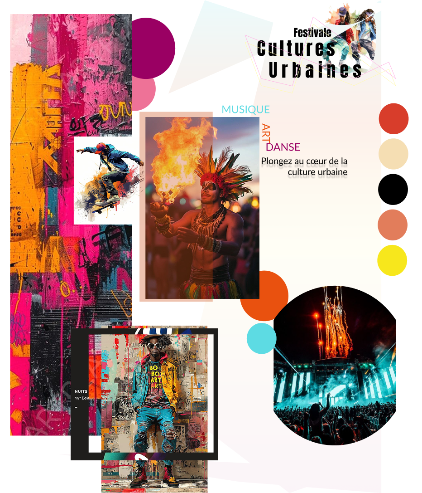
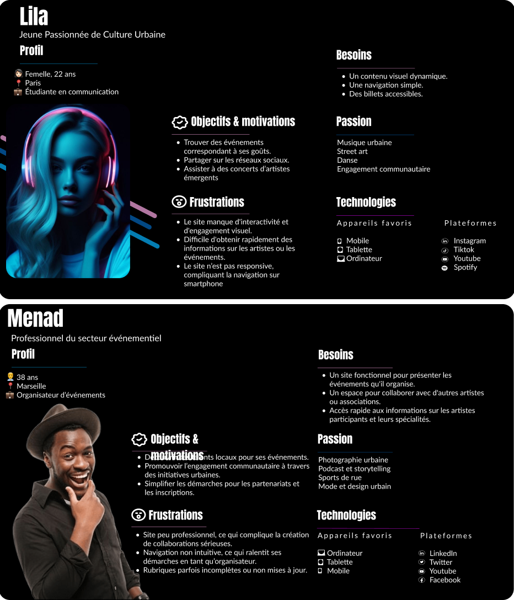
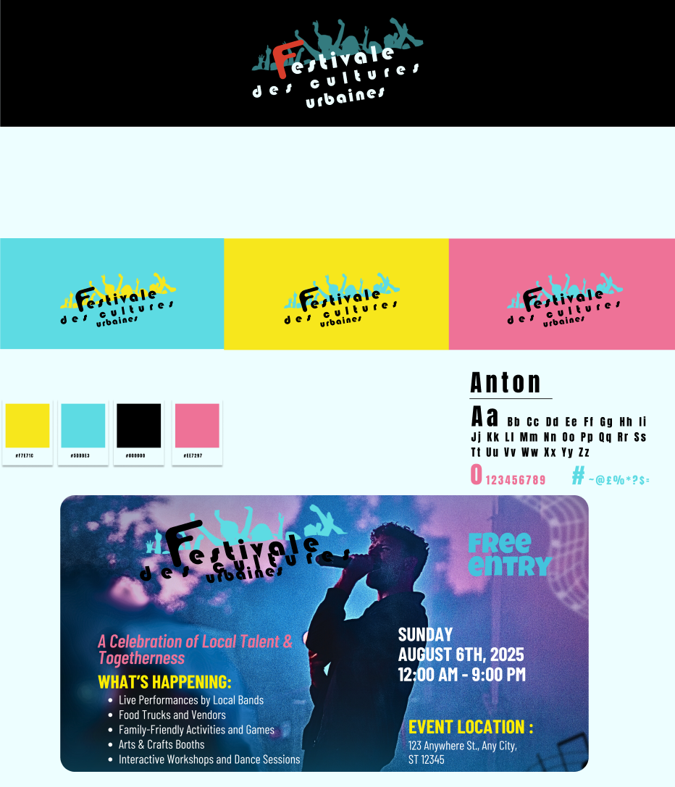

Festival des Cultures Urbaines
This project is a redesign of the Festival des Cultures Urbaines website. It aims to modernize the user experience and visual identity while keeping the vibrant spirit of urban culture. The new design features a clean layout, improved navigation, and an engaging UI inspired by street art and modern aesthetics.
← Back to Portfolio View Prototype on FigmaMoodboard, Logo & Persona



For this project, I started by creating a moodboard to define the visual identity of the festival,
including the color palette, typography, graphic styles, and street art inspirations.
Then, I designed the logo, drawing from the moodboard elements to ensure visual coherence
and convey the energy and dynamism of the festival.
Finally, I developed a persona to better understand the target audience, their goals,
needs, and frustrations, which guided the design choices throughout the project.
This frame combines all three elements to show how the overall identity was thought out in an integrated way,
from the initial concept to the final graphic representation.
UI Mockups & Screens